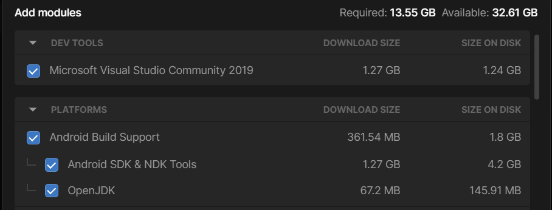

Getting Started
1. Install Unity
Download and install Unity. To use TrainAR you'll need atleast Unity Version 2022.1.0. When installing Unity make sure you check the correct modules, depending on which kind of device you want to create trainings for:
For Android choose Android Build Support. Make sure to have also Android SDK & NDK Tools and OpenJDK checked. If you do not already have an IDE installed, we recommend also installing Microsoft Visual Studio Community 2019.

For iOS choose iOS Build Support

2. Open TrainAR in Unity
Clone the TrainAR Repository to your Computer.
Open Unity and add TrainAR as a new Project. Open the TrainAR Project.
The Authoring Tool should open.

In the scene window you should now see a reference assembly of the current Workspace. This assembly should give you an idea of the size of objects in regards to the real world when viewed in AR mode.
3. Create a TrainAR Object
On the left in the Hierarchy tab is a currently empty list of the objects in the scene. On the Bottom Left, in the Project Tab open the Prefabs folder. There is a Prefab named Spoon_Prefab.
Click on this Prefab and drag-and-drop it into the Hierarchy Tab. The spoon should appear on the table.
To interact with this object You'll need to unpack the prefab and then convert it to a TrainAR Object. You do this by right-clicking on it in the Hierarchy Tab and select Prefab and in the submenu Unpack Completely. Then right-click on it again and select Convert to TrainAR Object. You may then change the name of the object.
You can move the newly created TrainAR object around, rotate it or change the size. To do this, you can switch between different tools in the Tools tab in the Scene View. For now make sure the Move tool is selected and move the object in a fitting position on the table.

Now add Coffee_Tin_Prefab from the Prefabs folder, unpack it and convert it to an TrainARObject, then position it. Your setup should now look kind of like this:
4. Create a TrainAR Stateflow
In the Bottom of the Unity window you should see the window with the Script Graph Tab.
Here you can create the flow of your training by creating nodes and connecting them. There already is one node in the Script Graph with the description TrainAR: Onboarding completed and training assembly placed.
This is the entry point of your training flow.
Right click into the Script Graph Window and select TrainAR from the Node Menu. From there, select TrainAR: Action.
The TrainAR Action node should appear in the Stateflow. There are two types of action you can define: Interaction and Combine. For now leave the chosen action to Interaction. In the TrainAR: Action node under the Correct Action textfield type in Spoon.
Now connect the two nodes by clicking on the output of the TrainAR: Onboarding completed and training assembly placed node and connecting the line with the input of the TrainAR: Action node.
You have now defined that, at this point in the stateflow, the correct next step is to trigger an Interaction on Spoon.
Right click again in the Script Graph window to open the node menu and select the TrainAR: Feedback node in the TrainAR nodes folder. This node opens an error overlay. Type a fitting error messages in the textfield and connect the Incorrect output of the TrainAR: Action node with the Input of the TrainAR: Feedback node.

You have now defined what happens if an incorrect action is taken at this point in the stateflow. Now define what should happens if the correct action is taken.
Create another TrainAR: Feedback node and type in feedback for the correct action taken and connect it to the correct output of the TrainAR: Action node.

Now create another TrainAR: Action node and connect it to the TrainAR Feedback for the correct feedback. Select Combination as an Action in the node. Under Correct Grabbed Object type in Spoon and under Correct stationary Object type in Coffee_Tin. Connect the nodes.
You have now defined, that at this point in the stateflow, the correct step is to combine the spoon with the coffee tin. Next you'll have to define what happens as a result. Let's make the combine fill up the spoon.
To do this add a TrainAR: Object Helper node to the stateflow. In the node, set the dropdown menu to Replace Mesh and type in the Object Name field Spoon. In the Project Tab navigate to the Meshes folder and drag-and-drop the SpoonFilled mesh into the mesh field of the node. Then, drag-and-drop the SpoonFilled material from the Materials folder into the material field. Finally, connect the stateflow.
Now add a TrainAR: Action (UI) node. Set the dropdown menu in the node you just created to Questionnaire. A UI action node waits for user input on the UI before it continues in a stateflow. In this example, we'll simply ask the user whether or not he want's to finish the training. Therefore write a fitting Questiontext in the Question field of the node and add some chooseable answers. Don't forget to connect the stateflow of the previous node.
Finally, create a TrainAR: Training Conclusion node and connect the node from the previous step with it.

Here is the full procedure in one go:

5. Deploy your training to your phone
Connect your Phone to your Computer.
Make sure you have USB Debugging activated on your phone.
Press the play button in the Unity Editor to deploy your training to your device.

Your Training should now be deployed to your phone and appear as TrainAR on your device.
6. Test your training
Open the now deployed application on your phone. Your phone might ask you if the TrainAR app should be allowed to use your phones camera. Confirm this.
A short tutorial that describes the general actions in TrainAR should appear. Navigate through the tutorial.
The camera feed of your device should start and you're asked to find a flat surface to scan. Follow these instructions. This should result in the setup you just created being placed.
[TBD Image of placed setup]
Now you can go through the actions you just as you programmed them into the stateflow.